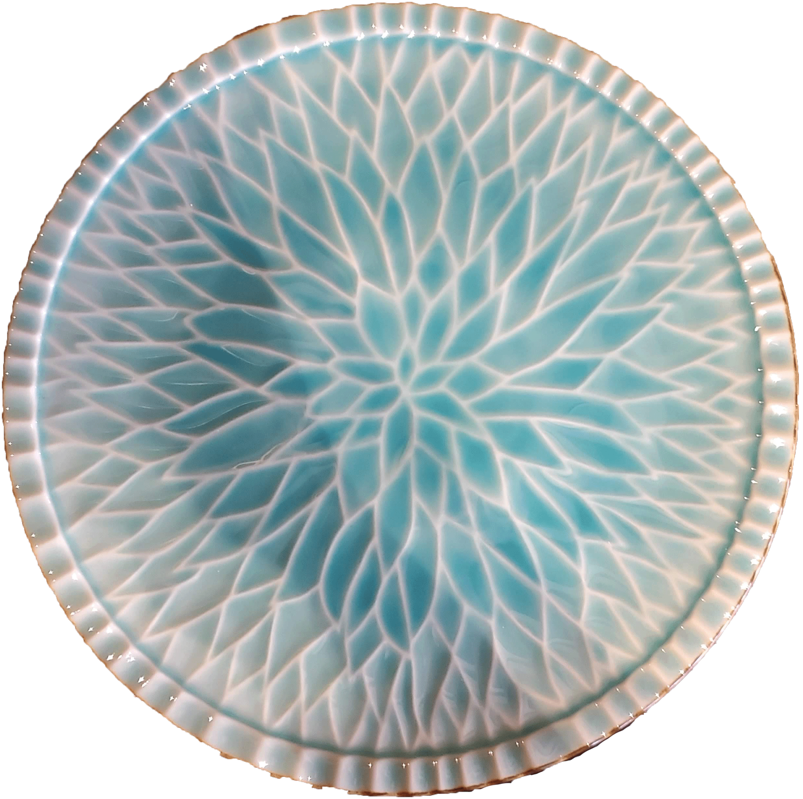
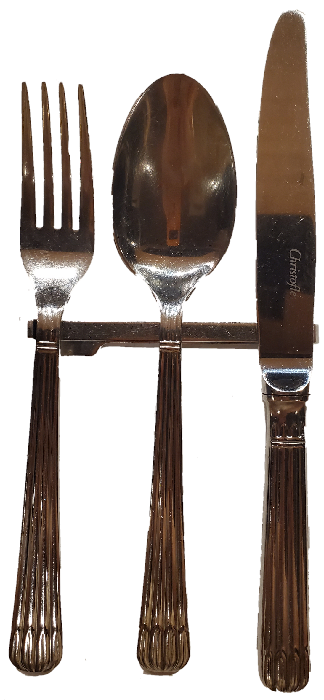
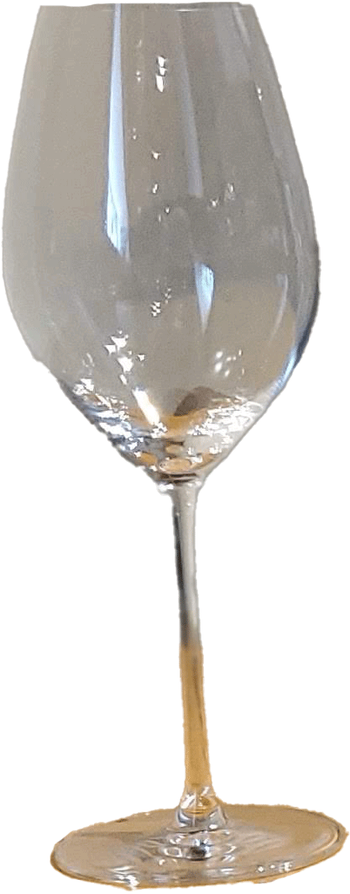
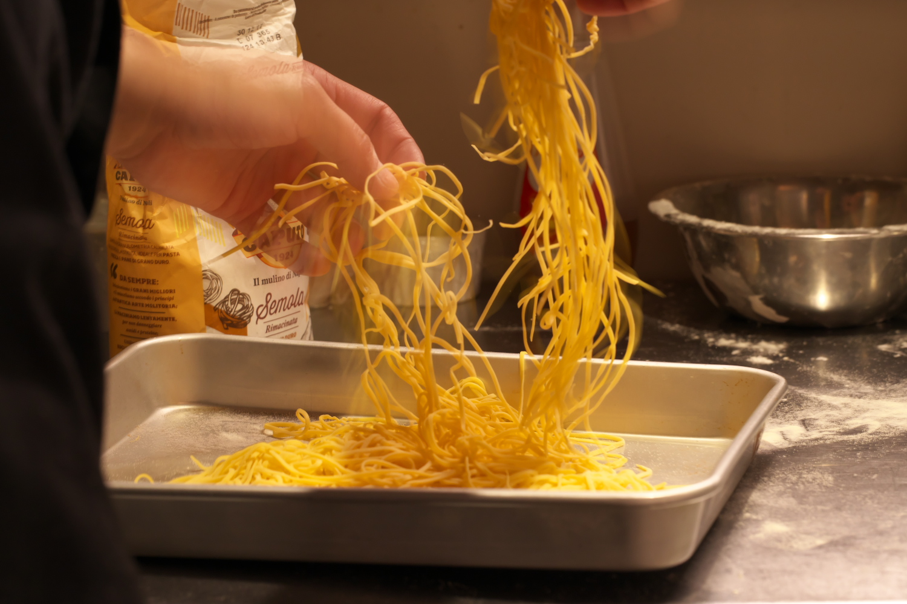
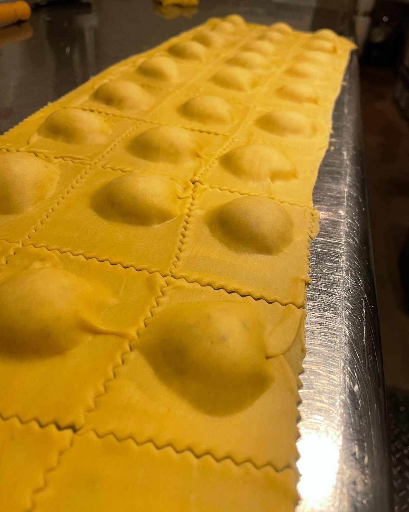
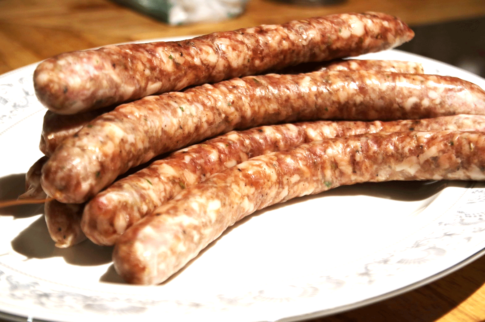

岐阜駅から徒歩5分の場所にあるイタリアンレストラン。
ふらっと立ち寄ってお料理を楽しむでも良し。ワインを嗜むでも良し。
お誕生日や記念日、また女子会など皆様の大切な日をプレジデンテで過ごしてみませんか？
イタリアのミシュラン掲載店で修行したシェフが、至福のひと時をお届けいたします。
私たちが拘っているものについてご紹介いたします。

私たちは、口に触れる食器にも拘っています。
細部にも拘って、お客様へ有意義な時間を提供いたします。
美濃焼を使用し、お食事の彩りに合わせた食器を選んでおります。
Christofle社のものを使用しております。
REDEL社のものを使用し、ワインの種類によってグラスを変えております。
厳選した産地の魚や肉、野菜などを使用しています。

料理に使う材料は、手作りに拘っています。
手作りによって、ここでしか味わえない料理をお楽しみください。
ソースに合わせていくつかの種類のパスタを手打ちでご用意しております。
季節に合わせてラビオリの中身を変えております。四季折々の味をお楽しみください。
肉だね作りから腸詰めなど、一つ一つの工程を丁寧に行っております。

ご提供する料理のレシピは、日本人に合わせたものではなく、
現地で学んだレシピをそのまま使用しています。
プレジデンテで「本場のイタリアの味」をご堪能くださいませ。
私たちPRESIDENTEはワインにもこだわりがございます。
詳しくはこちらをご覧ください。